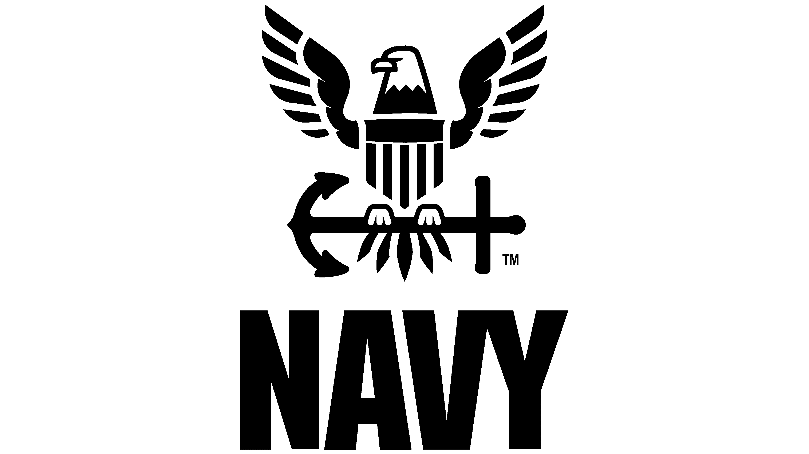

About Me
I'm Dasean, a Los Angeles, California-based tech entrepreneur, filmmaker, and CEO/Founder of Volk Entertainment.
I study Data Science and Political Science at the University of Southern California. In addition to my two majors, I am also pursuing a minor in Cinematic Arts at the USC School of Cinematic Arts.
I have a passion for leveraging data to drive insights in the entertainment industry, including film/tv, music, and video games.
I am a rising Data Scientist/ML Engineer specializing in entertainment data, with deep interests in Spatial, Quantum, and Neuromorphic computing.
My other love is space exploration and astronomy, more specifically, cosmology, multi-planetary data discovery, and astrophotography.
Education
USC, Master of Science (M.S.) Computer Science, 2027
USC, Bachelor of Arts (B.A.) Data Science, 2025
USC, Bachelor of Arts (B.A.) Political Science, 2025
USC School of Cinematic Arts, Minor, Cinematic Arts, 2025
Work Experience
CEO/Founder (2023-present)
- Responsible for setting the strategic direction and vision of the company, overseeing its overall operations, and making high-level decisions to drive growth and success.
 Arts + Entertainment Staff Writer (2023-present)
Arts + Entertainment Staff Writer (2023-present)
- Writing, publishing, & pitching stories for award-winning independent student newspaper of USC.
 (Facebook): Data Analytics Mentorship, Data Challenge Finalist (2022)
(Facebook): Data Analytics Mentorship, Data Challenge Finalist (2022)
- Participated in Meta SQL workshops conducted by Data Scientists at Facebook.
- Designed a BI report using a Netflix dataset and Tableau. Presented analysis to Data Scientists and Data Engineers working at Meta, practicing data analytics, data exploration, and data visualization to identify actionable insights.
United States Navy: Petty Officer Second Class (2017-2021)
- Aviation Electronics, Electrical and Computer Systems Technician (AV)
- Maintained and inspected a wide array of equipment including electrical and electronic components, batteries, inertial navigation units, test sets, electronic module test consoles, aircraft instruments, generators, generator power distribution equipment, and night vision goggles.
Personal
My other love is space exploration and astronomy, more specifically, cosmology, multi-planetary data discovery, and astrophotography.
I was born in "great life" state of Nebraska and lived in Washington for 5 years before arriving to Los Angeles. Most days of the week you can find me either playing my guitar, writing, reading, or watching films. I do require copious amounts of sunshine and nature, so I spend a lot of time at the beach or hiking.